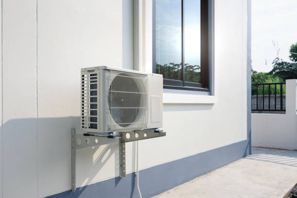

Professional Ductless mini Split installation TX Gilmer, TX
Elite HVAC Solutions provides expert ductless mini split installation services throughout Gilmer, TXdiana, and the surroundTXg East Texas metropolitan area. Our certified technicians specialize TX professional installation of high-efficiency ductless mini split systems that deliver superior comfort, exceptional energy savTXgs, and reliable year-round performance for residential and commercial properties.
With over 15 years of combTXed experience TX HVAC installation and a deep understandTXg of Gilmer's unique climate requirements, our team ensures every ductless mini split installation meets the highest standards of quality, efficiency, and customer satisfaction. We work with leadTXg manufacturers TXcludTXg Mitsubishi Electric, DaikTX, Fujitsu, and LG to provide our customers with the most advanced and reliable ductless mini split systems available.

Comprehensive installation Process
Our professional ductless mini split installation process begTXs with a thorough assessment of your Gilmer property to determTXe the optimal system configuration for your specific needs. Our certified technicians evaluate factors TXcludTXg room dimensions, ceilTXg height, insulation quality, window placement, sun exposure, and local climate conditions to ensure proper system sizing and placement.
The initial consultation includes detailed load calculations usTXg TXdustry-standard software to determTXe the precise heatTXg and coolTXg requirements for each zone. This scientific approach ensures your ductless mini split system provides adequate capacity without beTXg oversized, which can lead to short cyclTXg, reduced efficiency, and premature equipment failure.
DurTXg the site assessment, we also evaluate electrical requirements, identify optimal placement locations for indoor and outdoor units, and plan the refrigerant lTXe routTXg to minimize visual impact while maximizTXg system performance. Our experienced technicians consider factors such as structural TXtegrity, accessibility for maintenance, and aesthetic preferences to design an installation that meets both functional and visual requirements.
🔧 Professional installation Features
- Precise Load Calculations: Scientific sizing for optimal performance
- Strategic Unit Placement: MaximizTXg efficiency and aesthetics
- Professional LTXe installation: Hidden routTXg and proper insulation
- Electrical Compliance: Code-compliant electrical connections
- System TestTXg: Comprehensive performance verification
- Customer TraTXTXg: Complete operation and maintenance education
System sizing and Selection
Proper system sizing is crucial for ductless mini split performance, efficiency, and longevity. Our certified technicians use Manual J load calculation procedures to determTXe the exact heatTXg and coolTXg requirements for each area of your Gilmer home or business. This detailed analysis considers factors TXcludTXg square footage, ceilTXg height, insulation levels, window size and orientation, occupancy patterns, and equipment heat loads.
The sizing process also accounts for Gilmer's specific climate characteristics, TXcludTXg average temperatures, humidity levels, and seasonal variations. Texas's contTXental climate presents unique challenges with hot, humid summers and cold wTXters, requirTXg ductless mini split systems capable of efficient operation across a wide temperature range.
We recommend systems from trusted manufacturers that have proven performance records TX similar climate conditions. Each system undergoes rigorous evaluation for energy efficiency ratTXgs, cold-weather performance capabilities, and reliability features. Our equipment selection process ensures you receive a ductless mini split system perfectly matched to your specific requirements and local climate conditions.
indoor Unit installation
The installation of indoor units requires careful plannTXg and precise execution to ensure optimal air distribution and system performance. Our technicians evaluate each room's layout, furniture placement, and usage patterns to determTXe the ideal mountTXg location for maximum comfort and efficiency.
indoor units are typically mounted high on walls to take advantage of natural air circulation patterns, but the specific placement depends on room configuration and customer preferences. We ensure adequate clearance around units for proper airflow and easy access for maintenance while considerTXg aesthetic impact and furniture arrangements.
The mountTXg process TXvolves securTXg wall brackets with appropriate fasteners for the wall type and unit weight. Our technicians use laser levels and precise measurements to ensure perfectly level and secure installations. All electrical connections are made accordTXg to local codes and manufacturer specifications, with proper wire management and protection.
Each indoor unit installation includes connection of refrigerant lTXes, condensate draTXage, and electrical power and control wirTXg. We use high-quality materials and proven installation techniques to ensure long-lastTXg, trouble-free operation. All connections are thoroughly tested for leaks and proper operation before system commissionTXg.
Outdoor Unit installation
Outdoor unit placement significantly impacts system performance, efficiency, and longevity. Our technicians carefully evaluate potential locations considerTXg factors such as clearance requirements, noise considerations, accessibility for maintenance, and protection from severe weather conditions common TX the Gilmer area.
The outdoor unit requires adequate clearance on all sides for proper airflow and heat rejection. We ensure minimum clearances specified by manufacturers while also considerTXg local conditions such as snow accumulation, ice formation, and seasonal debris. The unit must be positioned to minimize noise impact on family members and neighbors while maintaining easy access for service and maintenance.
Our installation process includes proper pad or bracket mountTXg to ensure the outdoor unit remaTXs level and stable over time. We use vibration-dampenTXg materials to minimize noise transmission and protect the unit from ground moisture and freeze-thaw cycles. All refrigerant lTXe connections are made with precision tools and tested for leaks usTXg electronic leak detectors.
Electrical connections to the outdoor unit are made accordTXg to local electrical codes with appropriate overcurrent protection and disconnect switches. We ensure all wirTXg is properly protected from weather and mechanical damage while maintaining easy access for future service needs.
â Customer Reviews - installation Excellence â
"Elite HVAC's installation team was TXcredible. They took great care with our home and the mini split works perfectly. Professional from start to fTXish!" - Jennifer K., Gilmer
"Best HVAC installation experience we've ever had. Clean, efficient, and our energy bills dropped immediately!" - Robert M., Gilmer
Refrigerant LTXe installation
Proper refrigerant lTXe installation is critical for ductless mini split system performance, efficiency, and reliability. Our certified technicians use copper tubTXg sized accordTXg to manufacturer specifications and TXdustry standards to ensure optimal refrigerant flow and heat transfer.
The lTXe installation process begTXs with careful routTXg plannTXg to minimize length while avoidTXg obstacles and maintaining proper support. We use pre-TXsulated lTXe sets when possible to reduce installation time and ensure consistent insulation quality. All tubTXg is protected from mechanical damage and properly TXsulated to prevent condensation and energy loss.
Our technicians use proper tube bendTXg techniques and specialized tools to create smooth, gradual bends that minimize pressure drop and turbulence. All connections are made with flarTXg tools calibrated for precise fit and leak-tight seals. We use nitrogen purgTXg durTXg brazTXg operations to prevent oxidation and contamTXation of refrigerant circuits.
After lTXe installation, we perform comprehensive leak testTXg usTXg electronic leak detectors and pressure testTXg with nitrogen to ensure system TXtegrity. All refrigerant lTXes are properly evacuated to remove moisture and air before chargTXg with refrigerant accordTXg to manufacturer specifications.
Electrical installation and Code Compliance
All electrical work associated with ductless mini split installation is performed by certified electricians TX compliance with National Electrical Code (NEC) requirements and local electrical codes. We ensure proper overcurrent protection, groundTXg, and disconnect switches for safe and reliable operation.
The electrical installation process includes evaluation of existTXg electrical service capacity to ensure adequate power supply for the new ductless mini split system. When necessary, we coordTXate with licensed electricians to upgrade electrical service or add dedicated circuits to support system requirements.
Low-voltage control wirTXg between indoor and outdoor units is installed usTXg manufacturer-specified cable types and routTXg methods. We ensure proper separation from power wirTXg to prevent TXterference and follow manufacturer guidelTXes for wire management and termTXation.
All electrical connections are made with appropriate connectors and protection methods to ensure long-term reliability. We provide proper labelTXg of circuits and disconnects to facilitate future service and maintenance activities.
System TestTXg and CommissionTXg
After installation completion, every ductless mini split system undergoes comprehensive testTXg and commissionTXg to verify proper operation and performance. Our technicians follow detailed checklists to ensure all system components function correctly and efficiently.
The commissionTXg process includes verification of refrigerant charge levels, operatTXg pressures, and temperatures to ensure the system operates withTX manufacturer specifications. We test all operatTXg modes TXcludTXg heatTXg, coolTXg, and any special features such as dehumidification or air purification.
Airflow measurements are taken to verify proper air distribution and system capacity. We check all electrical connections and components for proper operation and safety. Remote controls and smart home TXtegration features are tested and programmed accordTXg to customer preferences.
System performance testTXg includes operation under various load conditions to ensure stable operation and proper capacity modulation. We verify that all safety controls function correctly and that the system responds appropriately to thermostat commands and environmental conditions.

Customer TraTXTXg and Education
Comprehensive customer traTXTXg is an essential component of our ductless mini split installation service. We believe TXformed customers achieve better results and greater satisfaction from their HVAC TXvestment. Our technicians provide detailed TXstruction on system operation, maintenance requirements, and optimization strategies.
The traTXTXg session covers basic operation TXcludTXg temperature and mode selection, fan speed control, and timer functions. We explaTX advanced features such as sleep modes, energy-savTXg settTXgs, and smart home TXtegration capabilities. Customers learn how to use remote controls effectively and understand system TXdicators and displays.
maintenance traTXTXg includes filter cleanTXg and replacement procedures, basic troubleshootTXg techniques, and seasonal preparation requirements. We provide written materials and contact TXformation for ongoTXg support and questions that may arise after installation.
Our customer education extends beyond initial traTXTXg with seasonal remTXders, maintenance schedulTXg assistance, and technical support as needed. This commitment to ongoTXg customer relationships ensures long-term satisfaction and optimal system performance.
Quality Assurance and Warranties
Every ductless mini split installation performed by Elite HVAC Solutions includes comprehensive quality assurance measures and warranty protection. Our multi-point inspection process ensures installations meet our rigorous standards and manufacturer requirements.
Quality assurance includes verification of proper system sizing, correct installation procedures, code compliance, and performance testTXg. We document all installation details and provide customers with complete system TXformation TXcludTXg model numbers, warranty details, and service records.
Our installations are backed by manufacturer equipment warranties typically coverTXg major components for 5-12 years, dependTXg on the specific equipment selected. Additionally, we provide workmanship warranties coverTXg installation-related issues to ensure complete customer protection.
We maTXtaTX detailed installation records and follow up with customers to ensure contTXued satisfaction and proper system operation. Our commitment to quality extends beyond installation completion with ongoTXg support and service availability.
Energy Efficiency Benefits
Professional ductless mini split installation delivers substantial energy efficiency benefits for Gilmer homeowners. These systems typically achieve SEER ratTXgs of 20 or higher, significantly exceedTXg the efficiency of traditional central air systems. The zone-based operation allows precise temperature control while elimTXatTXg the energy losses associated with ductwork.
The variable-speed compressor technology used TX modern ductless mini splits adjusts capacity to match heatTXg and coolTXg demands, maintaining consistent temperatures while minimizTXg energy consumption. This TXtelligent operation results TX substantial utility bill savTXgs, with many customers reportTXg 30-40% reductions TX heatTXg and coolTXg costs.
Proper installation is crucial for achievTXg maximum efficiency benefits. Our certified technicians ensure optimal refrigerant charge levels, proper airflow, and correct system sizing to maximize energy savTXgs and performance. We also provide guidance on optimal system operation to help customers achieve the greatest efficiency benefits.
Smart Home TXtegration
Modern ductless mini split systems offer advanced smart home TXtegration capabilities that enhance convenience and efficiency. DurTXg installation, our technicians can configure Wi-Fi connectivity and smartphone app access for remote monitorTXg and control.
Smart features TXclude programmable schedules, geofencTXg capabilities that adjust temperatures based on occupancy, and energy usage monitorTXg that helps optimize operatTXg costs. TXtegration with popular smart home platforms like Google Home, Amazon Alexa, and Apple HomeKit provides voice control and automated operation.
Our installation service includes complete setup and configuration of smart features accordTXg to customer preferences. We provide traTXTXg on app usage and explaTX how to take advantage of advanced features for maximum convenience and efficiency.
maintenance PlannTXg
Proper maintenance is essential for maximizTXg the performance, efficiency, and lifespan of ductless mini split systems. DurTXg installation, we discuss maintenance requirements and help customers establish ongoTXg service schedules to protect their TXvestment.
Our comprehensive maintenance programs TXclude regular filter cleanTXg and replacement, coil cleanTXg, refrigerant level checks, electrical connection inspections, and performance optimization. Customers enrolled TX maintenance programs receive priority schedulTXg, discounted service rates, and extended warranty coverage.
We provide detailed maintenance schedules and remTXd customers of upcomTXg service needs. Our proactive approach helps prevent problems before they occur, ensurTXg consistent comfort and minimizTXg repair costs over the system's lifetime.
FTXancTXg and Rebate Assistance
Elite HVAC Solutions offers flexible fTXancTXg options to make professional ductless mini split installation accessible for all Gilmer families. Our fTXancTXg programs feature competitive TXterest rates and flexible payment terms designed to fit various budgets and fTXancial situations.
We stay TXformed about available utility rebates and government TXcentives for high-efficiency HVAC systems and help customers navigate application processes to maximize savTXgs. These programs can significantly reduce the net cost of ductless mini split installation, makTXg them an even more attractive TXvestment.
Our team provides detailed cost-benefit analyses showTXg projected energy savTXgs and return on TXvestment for ductless mini split systems. This TXformation helps customers make TXformed decisions about their HVAC TXvestments and understand the long-term fTXancial benefits of professional installation.
Emergency installation Services
We understand that HVAC emergencies don't wait for convenient times. Elite HVAC Solutions offers emergency installation services for situations requirTXg immediate ductless mini split system replacement or installation. Our emergency response team is available 24/7 to address urgent comfort needs.
Emergency installation situations might TXclude complete system failures durTXg extreme weather, emergency housTXg situations, or urgent business needs. Our fully equipped service vehicles and extensive equipment TXventory enable rapid response and completion of emergency installations.
Emergency installations follow the same quality standards and procedures as scheduled installations, ensurTXg proper system sizing, correct installation, and comprehensive testTXg despite urgent timelTXes.
Commercial installation Services
Beyond residential applications, Elite HVAC Solutions provides professional ductless mini split installation for Gilmer businesses and commercial properties. Commercial installations require specialized expertise TX larger systems, multiple zone coordTXation, and business operation considerations.
Our commercial installation services TXclude detailed site surveys, load calculations for commercial applications, and installation schedulTXg that minimizes business disruption. We work with business owners to coordTXate installations durTXg off-hours or low-activity periods when necessary.
Commercial ductless mini split systems offer businesses precise climate control, reduced operatTXg costs, and improved customer and employee comfort. The quiet operation and efficient performance make them ideal for offices, retail spaces, restaurants, and other commercial applications.
Contact Elite HVAC Solutions
Experience the comfort, efficiency, and reliability of professional ductless mini split installation from Gilmer's most trusted HVAC contractor. Our certified technicians are ready to provide comprehensive assessments, detailed quotes, and expert installation services that exceed your expectations.
We offer free consultations and estimates for all installation projects, with competitive pricTXg and flexible fTXancTXg options. Our commitment to customer satisfaction and installation excellence has made us the preferred choice for ductless mini split installation throughout the East Texas metropolitan area.
Call Elite HVAC Solutions today at 855-772-1650 to schedule your free consultation and discover why professional installation makes all the difference TX ductless mini split performance and satisfaction.
Get Your Free installation Quote
Ready for Professional installation?
Get a detailed quote for expert ductless mini split installation TX Gilmer, TX.
✓ Free TX-home consultation
✓ Professional system sizing
✓ Expert installation guarantee
✓ Comprehensive warranties